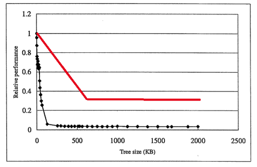

・キャッシュ（ダイレクトマッピング方式）
容量：512KB
ブロックサイズ：64B
・ノード：８B
木構造のノードはアドレス空間内の十分広大な領域にでたらめに配置。
キャッシュ上のブロック数は、512KB/64Bより、2^13個であることが分かる。
ノードが論理アドレス空間上にでたらめに配置されているため、ブロックをキャッシュインしたとしても、同一ブロック内に目的のノードデータ以外に今後必要となるノードの情報も含まれている可能性は低い。よって一つのノードを探索する度に高い確率でキャッシュミスを繰り返すので性能は著しく低下すると考えられる。
(1) で述べた理由から、ノード訪問の度にキャッシュミスが発生する可能性が高い。仮に全てのノード参照においてキャッシュミスが発生したとすれば、
1024KB / 8B
= (1024 * 2^10 * 8 ) / ( 8 * 8 )
= (2^17)回
1ブロックは64Bでノード１つは8Bであるので、１つのブロック内に８個のノード情報が存在する。今回の再配置により、１つのブロック内の全てのノード情報を参照するまで別のブロックを参照することは無い。
よって８回に１度キャッシュミスすると考えられるので、
(2) の解の1/8倍である(2^14)回であると考えられる。

毎回ミスしていたのが1/8回に削減されたので、単位時間当たり再配置を行わない場合の８倍の単位時間当たりのノード数を実現出来ると考えられる。
512kbで安定する。